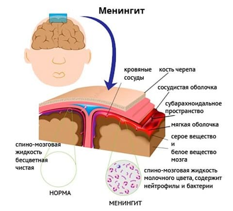
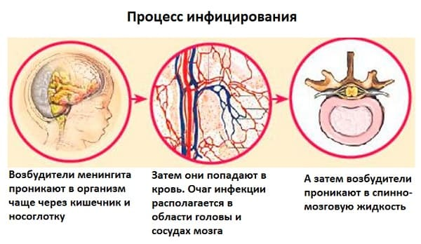
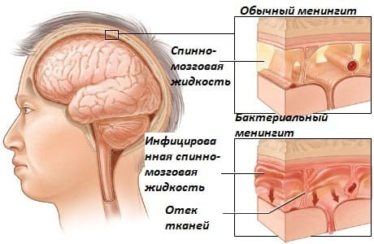
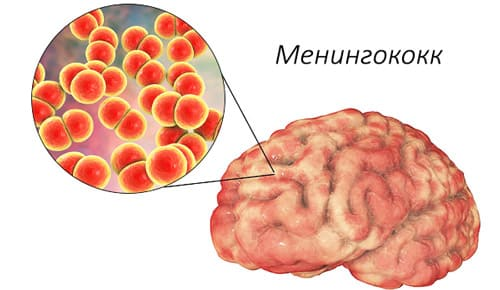

Менингит — это потенциально очень опасное заболевание, вызванное воспалением оболочки, покрывающей головной и спинной мозг (известной как мягкая мозговая оболочка). Это воспаление вызывается бактериальной или вирусной инфекциями и может поражать детей, подростков и взрослых. Две возрастные группы с самым высоким уровнем риска менингита — младенцы в возрасте до 6 месяцев, подростки и юноши. Вирусные и бактериальные менингиты могут иметь одинаковые симптомы и являться источником инфекции, но лечение и последствия их совершенно различны.
ВИРУСНЫЙ МЕНИНГИТ
Вирусы могут поразить любую часть тела. Вирусный менингит может случиться, если вирус попадает в кровь, которая переносит вирус к головному и спинному мозгу, что приводит к воспалению. Это происходит не при всех вирусных заболеваниях, но тем не менее происходит.
СИМПТОМЫ
Симптомы могут варьировать от легких до тяжелых. Большинство случаев вирусного менингита напоминают обычный грипп. Пять основных симптомов менингита:
Вирусный менингит встречается намного чаще и, как правило, имеет более легкое течение, чем бактериальный. Симптомы вирусного менингита могут напоминать грипп. Фактически многие случаи вирусного менингита не диагностируются, потому что они имитируют другие вирусные заболевания. |
Другими симптомами, указывающими на менингит, являются:
У больных любым типом менингита, как правило, наблюдается большинство основных симптомов и некоторые другие. Посетите врача, чтобы исключить возможность более серьезного заболевания.

ЛЕЧЕНИЕ
Если ваш врач подозревает менингит, возможно, потребуются анализы для исключения бактериального менингита, лечение которого сильно отличается от лечения вирусного менингита. Детям с вирусным менингитом может понадобиться госпитализация, в зависимости от тяжести заболевания и возраста ребенка. Младенцев и детей младшего возраста, которым поставлен диагноз вирусного менингита, госпитализируют с большей вероятностью, поскольку у них выше риск развития сильного обезвоживания. Большинство случаев вирусного менингита проходят сами по себе в течение 7—10 дней, и пациентам требуется только жидкость, покой и жаропонижающие препараты, чтобы ослабить симптомы. Практически все случаи вирусного менингита не требуют дальнейшего лечения. Существуют несколько тяжелых видов вирусного менингита у детей. Это вирусный менингит у новорожденного, инфицированного от матери, у которой во время родов было обострение генитального герпеса, при прохождении по родовому каналу. Если известно об активной форме генитального герпеса у матери, выполняется кесарево сечение для предотвращения заражения новорожденного. Герпетический менингит у новорожденных — очень серьезное и опасное для жизни заболевание. Для диагностики герпетического менингита могут быть сделаны анализы. Если его рано обнаружили и назначили специальные антивирусные препараты, исход, как правило, хороший.
Другие крайне редкие, но потенциально опасные причины вирусного менингита включают вирус Западного Нила и птичий грипп, о которых много пишут. Вирус Западного Нила заслужил много внимания не сколько лет назад, когда во многих штатах были его вспышки. Практически все случаи встречались у людей старше 50 лет, и считается, что дети находятся в группе очень низкого риска заболевания вирусом Западного Нила. Это заболевание распространяется через комариные укусы, и, конечно, всегда лучше избегать комариных укусов при любой возможности. Врачам важно объяснить родителям, что их дети находятся в группе крайне низкого риска заболеть этой вирусной инфекцией.
Повторяем: если вам кажется, что ваш ребенок заболел чем-то похожим на грипп, но симптомы ухудшаются, немедленно обратитесь к врачу. |

БАКТЕРИАЛЬНЫЙ МЕНИНГИТ
По сравнению с вирусным менингитом бактериальный менингит встречается намного реже, но более серьезен. Он может поразить любую возрастную группу, но самый большой риск заболеть бактериальным менингитом у младенцев младше 6 месяцев и у подростков и юношей. Каждый год в США регистрируются примерно восемь тысяч случаев бактериального менингита, 2000 из них заканчиваются смертью больного.
Бактериальный менингит начинается как обычная бактериальная инфекция, такая как инфекция носовых пазух, дыхательных путей, мочевыводящих путей или уха. Практически во всех случаях тщательное лечение и иммунная система организма побеждают бактерии и выводит инфекцию из организма. Тем не менее иногда бактерии могут проникнуть в кровь больного и попасть в мягкую мозговую оболочку, образовав там очаг инфекционного воспаления, ведущего к бактериальному менингиту. Бактериальный менингит могут вызвать многие виды бактерий. Тип бактерии обычно зависит от возраста заболевшего человека.
Заболевание может начаться в виде ОРЗ, инфекций придаточных пазух, кашля — фактически любыми признаками бактериальной инфекции. По мере прогрессирования заболевания у ребенка могут появиться симптомы, напоминающие грипп. Когда бактерии попадают в кровь и спинномозговую жидкость, окружающую головной и спинной мозг, проявляются самые серьезные симптомы менингита.
Дети, страдающие от бактериального менингита, обычно выглядят очень больными, и их состояние может резко ухудшиться. Если у вашего ребенка наблюдаются какие-либо из вышеперечисленных симптомов или заболевание становится намного серьезней, немедленно свяжитесь с врачом. На самом деле, если есть подозрение на бактериальный менингит, лучше отвезите ребенка в отделение неотложной помощи, поскольку бактериальный менингит требует незамедлительной госпитализации и лечения.

ДИАГНОСТИКА
Всех больных с подозрением на бактериальный менингит всегда госпитализируют и обследуют. Обследование включает анализы крови и процедуру, известную как люмбальная (или «спинномозговая») пункция. Люмбальная пункция может показать наличие бактерий в спинномозговой жидкости и определить бактериальную или вирусную природу менингита.
ЛЕЧЕНИЕ
Лечение бактериального менингита в первую очередь — внутривенное введение антибиотиков, которое должно проводиться в больнице. Врачи даже могут начать лечение бактериального менингита прежде, чем будет поставлен окончательный диагноз, поскольку это опасная для жизни болезнь. Как правило, требуется внутривенное введение жидкостей для предотвращения или восполнения обезвоживания и применение стероидов для уменьшения воспаления мозга. Дальнейшее лечение зависит от тяжести конкретного случая бактериального менингита.
ОСЛОЖНЕНИЯ
Возможные отдаленные последствия бактериального менингита полностью зависят от того, как рано начато лечение и насколько серьезна инфекция у ребенка. Хорошая новость: если рано диагностировать заболевание и начать лечение, можно ожидать полного выздоровления без осложнений. Более серьезные случаи бактериального менингита могут привести к следующим последствиям:
СОВЕТ ДОКТОРОВ СИРС: ВЫСМАТРИВАЙТЕ КРАСНЫЕ ТОЧКИ Самая опасная форма бактериального менингита (называемая менингококковый менингит с менингококцемией) сопровождается особой сыпью, которая называется петехиальной (петехия — точечное кровоизлияние) и представляет собой множественные красные точки, выглядящие, как будто кто-то дотрагивался до кожи вашего ребенка красной шариковой ручкой. Если у вашего ребенка симптомы менингита, необходимо осмотреть ребенка на наличие этих точек, чтобы знать, что необходимо немедленно обратиться за медицинской помощью. |
Если бактериальный менингит не диагностирован сразу и лечение не начато вовремя, может произойти отказ многих органов и наступить смерть.

ПРОФИЛАКТИКА
Универсальная вакцина сильно уменьшила частоту возникновения бактериального менингита. В течение первого года жизни младенцев, как правило, прививают против главных причин бактериального менингита у этой возрастной группы (гемофильной и пневмококковой инфекции). Как мы обсуждали раньше, вторая возрастная группа, подверженная высокому риску заболевания бактериальным менингитом, — подростки и юноши, особенно те, которые часто пребывают в замкнутых помещениях (комнаты общежития, казармы, раздевалки и школьные кабинеты). Сейчас рекомендуется делать одноразовую вакцинацию от менингококкового менингита всем подросткам в возрасте от 11 до 18 лет. Если вашему ребенку не была сделана подобная прививка в старших классах, настоятельно советуем сделать ее до поступления в колледж или во время учебы там.
Другие важные пути профилактики бактериального менингита — соблюдение чистоты и гигиенические мероприятия. Уменьшение шансов заразиться обычной бактериальной инфекцией, такой как инфекция пазух или верхних дыхательных путей, снизит риск заболеть бактериальным менингитом. Обязательно объясните ребенку важность тщательного мытья рук, индивидуального использования посуды, чашек и т.п. и необходимость быть осторожным, чтобы не распространить заболевание, если он болен. Когда у кого-то обнаруживается бактериальный менингит, часто всем, контактировавшим с этим человеком, рекомендуется принимать пероральные антибиотики для профилактики. |
Здоровье ребенка от докторов Сирс / Сирс У. и др.